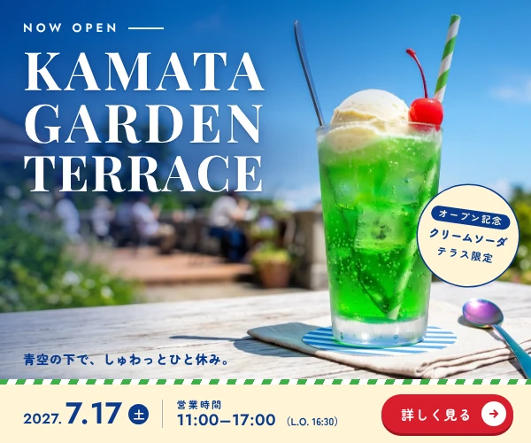

1
単位はピクセル
画面の大きさは見る人によってちがいます。ミリではなくピクセル（px）で作ります。
最終更新日：2026/10/06
この講座について
一目で伝える
1枚のページで順番に伝える
いくつものページで伝える
デザインをブラウザで表示する
流れ
バナー
バナーの役割
バナーの大きさ
Google広告
SNS
参考
Web用データ
画面の大きさは見る人によってちがいます。ミリではなくピクセル（px）で作ります。
画面は光で色を見せます。インクのCMYKではなくRGBで作ります。
細かい画面では2倍の大きさの画像がくっきり見えます。
Illustratorの設定
新しく作るとき
書き出すとき
画像の形式
重い画像は表示に時間がかかります。中身に合った形式を選ぶと軽くなります。
| 形式 | 向いているもの | 透明 |
|---|---|---|
| JPG | 写真 | できない |
| PNG | 文字や図が中心のもの | できる |
| SVG | ロゴやアイコン | できる |
| WebP | 写真にも図にも使える軽い形式 | できる |
Google広告の画像バナーは150KBまでと決まっています。
やってみよう
